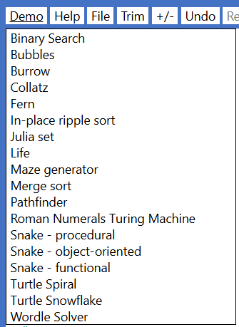

Symbols, Keywords, Constants, Methods and Types
Keywords
Getting started
Technical platform
Demo programs
Changes and additions for Beta 6
Still to be implemented..
If you have programmed in another language, the key differences to be aware of…
The Elan editor – quick reference
Navigation – using the keyboard
Editing – using the keyboard
Mouse operation – quick reference
Instruction Set
Expressions
Literal value
Named value
Operator
Arithmetic operator
Logical operator
Function call
Lamdba
Input/Output
Printing plain text to the Console
Print Html to the Console
Inputting data from the keyboard
Block graphics
Turtle graphics
Vector graphics
Reading keys ‘on the fly’
Reading textual data from a file
Writing textual data to a file
Types
Int
Float
Boolean
String
Procedural programming
Main routine
Defining named values
Conditions & selection
Loops & iteration
Function and procedures
Catching and throwing exceptions
Generating random numbers
Comments
Object-oriented programming
Class
Abstract class
Interface
Inheritance
Property
Function method
Procedure method
Functional programming
If expression
Higher order functions (HoFs)
Working with records
Generating random numbers within a function
Tests
Types
Int
Float
Boolean
String
Lists
Dictionaries
Tuple
Func
Standard Library
Standalone functions
Standalone procedures
System methods
Standard data structures
Higher order functions (HoFs)
Dot methods that work on many different Types
Symbols, Keywords, Constants, Methods and Types
| Punctuation symbols recognised by Elan |
|---|
| ( ) |
brackets |
used in arithmetic or logical expressions, and to delimit parameters |
| [ ] |
square brackets |
used to delimit a literal List or Dictionary, or for an index or
index-range
|
| { } |
curly braces |
used to delimit a literal ListImmutable or DictionaryImmutable, or to define an ‘interpolated field’ within a literal String |
| . |
dot |
used to define fractional number, and to access a method or property using ‘dot syntax’ |
| .. |
double-dot |
used to define an index-range |
| , |
comma |
used to separate items in several different forms of list |
| : |
colon |
used to define a key-value pair in a literal Dictionary or DictionaryImmutable |
| + |
plus |
the addition operator |
| - |
minus |
the subtraction operator, or negation (unary) operator |
| * |
multiply |
the multiplication operator |
| / |
divide |
the division operator. Also used to delimit a literal Regular Expression (RegExp) |
| ^ |
caret |
raise-to-the-power-of operator |
| < |
less than |
comparison operator |
| > |
greater than |
comparison operator |
| <= |
less than or equal to |
comparison operator |
| >= |
greater than or equal to |
comparison operator |
| => |
fat arrow |
used in a lambda to signify ‘returns’ |
| _ |
underscore |
only punctuation symbol that may be used within an identifier (name), and can also be used to ‘discard’ elements when deconstructing a Tuple |
| " |
Double- quotes |
the delimiter for a literal String |
| # |
hash |
signifies a comment |
Keywords recognised by Elan
Colour key: keyword constant method Type
Note: ‘extension’ means that the function or procedure is called using ‘dot syntax’ on a value of the appropriate Type.
A
abs(number) – standalone function
abstract – keyword: see Abstract class
acos(value) – standalone function
acosDeg(value) – standalone function
and – keyword: see Logical operators
any(lambdaOrFunctionRef) – extension function
append(value) – extension procedure
appendList(other) – extension procedure
as – used in a parameter definition: see Functions and procedures
asList() – extension function
asBinary() – extension function
asin(value) – standalone function
asinDeg(value) – standalone function
asIterable() – extension function
asImmutableList() – extension function
asRegExp() – extension function
assert – keyword: see Tests
asSet() – extension function
asString() – extension function
asUnicode(character) – extension function
atan(value) – standalone function
atanDeg(value) – see more
B
BaseVG – Type
be – keyword: see Let statement
bitAnd(a, b) – standalone function
bitNot(a) – standalone function
bitOr(a, b) – standalone function
bitShiftL(a) – standalone function
bitShiftR(a) – standalone function
bitXor(a, b) – standalone function
black – constant (Int)
BlockGraphics – Type
blue – constant (Int)
brown – constant (Int)
C
call – keyword: see Procedure
catch – keyword: see Catching and throwing exceptions
ceiling(number) – extension function
CircleVG – Type
class – keyword, see Class
clearPrintedText() – standalone procedure
clearGraphics() – extension procedure
clearKeyBuffer() – extension procedure
clock() – standalone system method
closeBrace – constant (String)
constant – keyword, see Constant
constructor – keyword, see Class
contains(item) – extension function
copy – keyword, see Working with records
cos(radians) – standalone function
cosDeg(degrees) – standalone function
new Array2D(columns, rows, initialValue) – standalone function
createFileForWriting(fileName) – standalone function
D
degToRad(degrees) – standalone function
div – keyword, see Arithmetic operators
E
each – keyword, see Each loop
ElanSet – Type
else – keyword, see If statement and If expression
empty – keyword, creates the empty value of a specified Type. See e.g. Lists
end – keyword, (followed by another keyword) defines the end of a multi-line construct
enum – keyword, see Enum
exception – keyword, see Try statement and
exp(x) – standalone function
F
false – constant (Boolean)
filter(lambdaOrFunctionRef) – extension function
floor(number) – extension function
for – keyword, see For loop
from – keyword, see For loop
function – keyword, see Function and Passing a function as a referenc
G
getKey() – standalone system method
getKeyWithModifier() – standalone system method
global – keyword, see Scoping and name qualification
GraphicsBase – Type
green – constant (Int)
grey – constant (Int)
H
hasKey(key) – extension function
head() – extension function
I
if – keyword, see If statement and If expression
ignore – keyword, see Tests
import – (Not yet implemented)
in – keyword, see Each loop
indexOf(targetString) – extension function
indexOfItem(targetItem) – extension function
inherits – keyword, see Inheritance
inputFloat(prompt) – standalone system method
inputFloatBetween(prompt, minValue, maxValue) – standalone system method
inputInt(prompt) – standalone system method
inputIntBetween(prompt, minValue, maxValue) – standalone system method
inputString(prompt) – standalone system method
inputStringFromOptions(prompt, options) – standalone system method
inputStringWithLimits(prompt, minLength, maxLength) – standalone system method
insertAt(index, value) – extension procedure
interface – keyword, see Interface
is – keyword, see Equality testing
isAfter(other) – extension function
isAfterOrSameAs(other) – extension function
isBefore(other) – extension function
isBeforeOrSameAs(other) – extension function
isnt – keyword, see Equality testing
J
joinListElements(separator) – extension function
joinListElements(separator) – extension function
K
keys() – extension function
L
lambda – keyword, see Lambda
length() – extension function
let – keyword, see Let statement
– keyword, see Scoping and name qualification
LineVG – Type
log10(number) – standalone function
log2(number) – standalone function
logE(number) – standalone function
lowerCase() – extension function
M
main – keyword, see Main routine
map(lambdaOrFunctionRef) – extension function
max() – extension function
maxBy(lambdaOrFunctionRef) – extension function
min() – extension function
minBy(lambdaOrFunctionRef) – extension function
mod – keyword, see Arithmetic operators
N
new – keyword, see Using a class
not – keyword, see Logical operators
O
of – keyword, used to define Types of elements, see Lists Dictionaries Func
openFileForReading() – standalone system method
openBrace – constant (String)
or – keyword, see Logical operators
out – keyword, see Parameter passing
P
parseAsFloat(string) – standalone function
parseAsInt(string) – standalone function
pause(milliseconds) – standalone procedure
pi – constant (Float)
prepend(other) – extension procedure
prependList(other) – extension procedure
print – keyword, see Input/Output
printLine(text) – standalone procedure
printNoLine(text) – standalone procedure
printTab(position, text) – standalone procedure
private – keyword, see Object-oriented programming
procedure – keyword, see Functions and procedures
property – keyword, see Property
putAt(index, value) – extension procedure
putAt2D(column, row) – extension procedure
putAtKey(key, value) – extension procedure
Q
Queue – Type
quotes – constant (String)
R
radToDeg(radians) – standalone function
Random – Type
random() – standalone system method
randomInt(low, high) – standalone system method
range(start, end) – standalone function
record – keyword, see Working with records
RectangleVG – Type
red – constant (Int)
reduce(initialValue, lambdaOrFunctionRef) – extension function
ref – keyword, see Passing a function as a referenceRepeat loop
removeAll(value) – extension procedure
removeAt(index) – extension procedure
removeAtKey(key) – extension procedure
removeFirst(value) – extension procedure
repeat – keyword, see Repeat loop
replace(match, replacement) – extension function
return – keyword, last statement within a function – see Function
returns – keyword, defines the return Type in a function signature – see Function
round(number, decimalPlaces) – extension function
S
set – keyword, see Variables
Set – Type
sin(radians) – standalone function
sinDeg(degrees) – standalone function
sortBy(lambdaOrFunctionRef) – extension function
split(separator) – extension function
sqrt(number) – standalone function
Stack – Type
step – keyword, see For loop
T
tan(radians) – standalone function
tanDeg(degrees) – standalone function
test – keyword, see Tests
testRegExp(regExp) – extension function
TextFileReader – Type
TextFileWriter – Type
then – keyword, see If statement and If expression
this – keyword, see Object-oriented programming
throw – keyword, see Catching and throwing exceptions
to – keyword, see For loop
trim() – extension function
true – constant (Boolean)
try – keyword, see Catching and throwing exceptions
tuple –keyword, see Tuple
Turtle – Type
U
unicode(value) – standalone function
upperCase() – extension function
V
values() – extension function
variable – keyword, see Variables
VectorGraphics – Type
W, X, Y, Z
waitForAnyKey() – standalone procedure
while – keyword, see While loop
white – constant (Int)
with – keyword, see Working with records
withInsert(index, value) – extension function
withPut(index, value) – extension function
withPutKey(key, value) – extension function
withRemoveAll(value) – extension function
withRemoveAt(index) – extension function
withRemoveAtKey(key) – extension function
withRemoveFirst(value) – extension function
yellow – constant (Int)
Getting started
Technical platform
You can access the Elan Beta here.
Elan is designed to run within the Chrome browser; correct operation within other browsers is not guaranteed.
Demo programs
The Beta version includes a Demo button that offers a menu of demonstration programs which you can run:

The best way to get started with Elan is to explore these demo programs. You can edit any of them and save your own copy locally.
Changes and additions for Beta 6
Changes to language and standard library that could break existing code
Both the syntax and the layout for the following constructs have changed:
if statement. See If statement
try Statement. See Catching and throwing exceptions
The switch statement has been removed entirely. The improved if statement means that the switch statement no longer offered any advantages over using a series of else if clauses.
There have been significant changes to object-oriented programming, including:
For a concrete class, defining a constructor is now optional.
A concrete class may now inherit from only one abstract class.
An abstract class may now define both public and private concrete properties and methods (as well as abstract properties and methods).
Elan now has the concept of an interface – like an abstract class but defining only abstract members, and with the advantage that a concrete class may inherit from any number of interfaces (plus, optionally, one abstract class).
An abstract class cannot now inherit from another abstract class, but it may inherit from one or more interfaces.
Still to be implemented..
The following lists a few of the stand-out items that are not yet implemented. For a much longer list you are welcome to browse all the open items on our development project planning system on Github at: https://github.com/elan-languageAndIDE/issues. However, please bear in mind that those items are written by and for the development team, rather than for public discussion.
Editor
Debugger. Ability to insert breakpoints, pause, single-step, and read the state of variables.
Navigate directly from use of an identifier to its definition.
Renaming of identifiers (variables, constants, parameters, function and procedure names).
Profile configuration (exists as a proof of concept only at present). In future release you will be able to define multiple profiles and then assign a profile to each user name.
Ability to switch-on anti-plagiarism option (exists as a proof of concept only at present).
Ability to perform all navigation and actions by keyboard or mouse (except entering code into fields, which must be done through the keyboard).
If you have programmed in another language, the key differences to be aware of…
Types
Elan is a statically typed language. Basic Types are Int, Float, Boolean, and String. There are ready-made data structures as Types List, ListImmutable, Dictionary. Elan supports user-defined classes and enums, and there are several ready-made classes in the standard library such as BlockGraphics, File, Set, Stack, Queue, Tree, Graph … (only the first of these is in the Beta 6).
Variables
Variables are defined by the variable statement, and re-assigned with a set statement.
Variable names (indeed all names in Elan) must begin with a lower-case letter.
Variables must be initialised with a literal value or an expression that yields a value, and the Type of that value determines the Type of the variable.
There is no such thing as a global variable in Elan. Variables are defined within main, or within a function or procedure and are visible only within that scope.
Constants
A constant is only ever defined at global level and is set to a literal value of an immutable Type: for example any of the four basic Types or a ListImmutable, but not an List (see below).
Let statement
A let statement may be thought of as being between a constant and a variable. Like a variable a let may be defined only within a routine, but unlike a variable it may not be re-assigned once defined. It is recommended that you always use a let in preference to a variable unless you need to be able to assign a new value to it.
Lists
An List is a mutable data structure – as it is in most languages.
It may be initialised to a specific size, with each element set to an initial value (e.g. 0 for an Int or Float), but it may also be extended dynamically with the append and prepend methods.
A 2D List may also be created, accessed with a double index e.g. a[2][3]. See also 2-dimensional List.
Testing for equality
Elan tests for equality by value (not equality by reference) using the keywords is (for example if x is y) and isnt. The comparisons, >, <. >=, <= apply to numeric Types (Int and Float) only. (There are methods for String comparison – see Dot methods on a String )
Methods
There are several types of method in Elan: standalone function, standalone procedure, instance function and instance procedure (both defined on a class), and system methods. These are expanded on below.
Elan does not support overloaded method names (methods with the same name, but different number or Type of parameters). Every free-standing method must have a unique name distinct also from those in the standard library. Instance methods must be unique within a class, though the same name may be used within different classes.
Function
An Elan function (whether standalone or an instance method on a class) must be a pure function. That is, it must return a value that is derived, solely and deterministically, from the arguments supplied as parameters. A function contains one, and only one, return statement which must be the last (or only) statement in the function body.
A function may not generate side-effects, for example it may not:
Contain any print statements
Use any system method within its expressions
Make a call to any procedure (since procedures are not pure)
Assign to or mutate any parameter
Procedure
An Elan procedure may be thought of as a ‘command’. Like a function it may define parameters but it does not return a value. This is because a procedure necessarily makes changes: changes to one or more of the parameters (if the parameter definition is prefixed by out), and/or changes to the system by calling print or any of the system methods.
A procedure exits after executing the last statement in the body. There is (deliberately) no mechanism to exit ‘early’, thereby enforcing structured programming.
A procedure is always executed via a call statement, either standalone, or as a ‘dot method’ on a named instance.
System method
System methods are all defined as part of the standard Elan library. Some are like procedures, returning no value, and are hence executed via the call statement. Others are similar to functions in that they return a value and are evaluated within an expression. However, unlike functions these system methods either have side-effects or external dependencies (or both). For that reason, no system method – whether resembling a procedure or a function – may be used within a user-defined function (or within a test). They may only be used within main or within a procedure.
Object-oriented techniques
The name given to a class must follow the rules for any Type name i.e. it must start with an upper-case letter.
Every (concrete) class has a constructor, which is automatically added when you define a class. But it is not essential to define any code within that constructor.
A property may be assigned (set) a new value within the constructor, or within a procedure method defined on the class or the sub-class. But a property may never be assigned by code outside the class. If you require this capability, you can write your own procedure methods (commonly called ‘setter’ methods) to do this. A function method may read properties, but not write to them.
Whenever you wish to access a property from within a method (or from within the constructor) on the same class, then the name of the property must be prefixed with the ‘qualifier’ property. (‘property-dot’). This applies whether you are reading or setting the property. By this means you can have a method parameter with the same name as a property, but they are unambiguous because the property must be prefixed. A common pattern is to use the same name in a ‘setter’ method, for example:
procedure setName(name as String)
set property.name to name
end procedure
The property. qualifier is neither required, nor allowed, when accessing a property on an instance of the class, because the instance name acts as the qualifier.
A concrete class may inherit from one or more abstract classes, but may not inherit from another concrete class. This enforces the widely-recognised OOP design principle that ‘all classes should be abstract or final (not inheritable)’.
An abstract class may define abstract members (property, function, procedure), which must always be implemented by any concrete sub-class. It may also define private members (property, function, procedure), which are visible to any concrete sub-class, but not visible from code outside the class hierarchy.
Functional techniques
Elan has strong support for the functional programming paradigm, building on the foundation of its rigorous definition of a function. In addition:
The standard library defines several ‘higher-order functions’ (HoFs) including map, filter and reduce that apply to any Type that is ‘iterable’ (including String, List and ListImmutable).
Any user-defined or standard library function may be passed as an argument into a parameter, or associated with a name using a variable or let statement, by preceding the name of the function with the keyword function.
You may also define a lambda, inline as an argument in a function call, or assigned to a named value.
Although pure functions, including HoFs, may work with mutable data structures (without actually mutating them), immutable data structures are considered a better fit for functional programming. Elan provides many immutable standard data structures, including String (immutable in most languages) and ListImmutable (in contrast to many languages), and record which is like an immutable form of a class without encapsulated methods.
Input/Output
All forms of input/output involve dependencies on, or make changes to, the system. Therefore they may only be used within either the main or a procedure.
Print Html to the Console
As well as plain text, it is also possible to print Html to the console, which will be correctly formatted. For example:
print "<h1 style='color: blue;'>A heading</h1>"
print "<p>some text</p>"
Will produce:

Notes
For specifying style or other attributes within Html tags, the attribute values should be enclosed in single quotation marks ' as shown. Html will recognise single or double quotation marks, but entering double quotation marks would terminate the Elan string. Alternatively, you could replace each ' by the interpolated constant {quotes}.
It is not necessary to put individual lines of Html into separate print statements – you can print a string of any length – but putting tags into separate print statements can improve the readability of your code.
Using an embedded stylesheet
If you want styles to be applied to multiple tags you can embed a stylesheet. For example, the following stylesheet will set the font for all text, and some further details for all <h1> headings:
<style>
h1 {
color: blue;
font-size: 24pt;
}
p {
font-family: Helvetica;
}
</style>
This may be safely coalesced into a single line and many spaces removed:
<style>h1{color:blue;font-size:24pt;}p{font-family:Helvetica;}</style>
The only problem is with the curly braces {} since within a literal string Elan will interpret these as defining an ‘interpolation’ clause (see Interpolated string). This can best be overcome by using the interpolated constants {openBrace} and {closeBrace} instead of { and }:
main
let stylesheet be "<style>h1{openBrace}color:blue;font-size:24pt;{closeBrace}p{openBrace}font-family:Helvetica;{closeBrace}</style>"
print stylesheet
print "<h1>A heading</h1>"
print "<p>plain text</p>"
end main
Here is the result:

Alternatively you could put, say, [ and ] in the original Html stylesheet instead of { and }, and use a function to replace the square brackets with curly braces (defined by their Unicode codepoint values) before use, and get the same result:
main
let stylesheet be "<style> h1[color:blue;font-size:24pt;],p[font-family:Helvetica;] h1</style>"
print replaceBrackets(stylesheet)
print "<h1>A heading</h1>"
print "<p>plain text</p>"
end main
function replaceBrackets(original as String) returns String
return original.replace("[", unicode(123)).replace("]", unicode(125))
end function
Notes
If you define an embedded stylesheet in the manner described above, then this should be printed first, and will then be applied to any subsequent printing of Html within the program. However …
If the console is cleared, either by the Clear button on the UI, or by programmatically using call clearPrintedText(), then the stylesheet will be removed also. You can, though, print the stylesheet again before printing further content. In this case it can be a good idea to define the stylesheet as a (global) constant.
In general you should avoid using * to define the applicability of a style, since this could mess up the styling of the Elan IDE, and even render it unusable. (Should this happen, refresh the browser and correct the stylesheet definition). If you want a style to apply to all elements that you are printing you may specify #console *, which means ‘all elements within the element with id = 'console'
Beware printing strings with < and > in them in case they enclose non-blank characters since Elan will try and interpret the enclosed characters as an Html tag.
Inputting data from the keyboard
Also the readKey system method on BlockGraphics
Colour
Where a colour can be specified, it is a value of Type Int in the range
0 – 16,777,215 (i.e. 0 to 224 -1, expressable as 24-bit binary number).
As in Html, a colour number is made up of the values from 0 to 255 for each of the three components: red (R), green (G) and blue (B). So a colour value may be described by its integer value, or by three decimal values (R, G, B), or by a 6-digit hexadecimal number (0xrrggbb).
Elan has a small number of standard named colours:
You can use these colour names directly in an Int. If you want to define other colours, you put any of the 16,777,215 colour numbers into literals, constants or variables either as a decimal integer or, more conveniently, in the hexadecimal form shown in the table. For example you might define lightBlue and deepPink using these hex values:
| 8421504 |
128 171 255 |
0x80abff |
lightBlue |
|---|
| 16206720 |
247 75 128 |
0xf74b80 |
deepPink |
and then use a variable or a constant to hold those values:
variable lightBlue set to 0x80abff
constant deepPink set to 0xf74b80
Note that in Elan code a hexadecimal colour value is preceded by 0x, whereas in an Html stylesheet it is preceded by #. Also, the standard colour names may not correspond exactly.
Reading keys ‘on the fly’
In some applications – especially in games, for example – you want the program to react to a key pressed by the user, but without holding up the program to wait for value to be input.
Whether your application makes use graphics, or just uses the Console for text, reading keystrokes ‘on the fly’ is done via one of two methods:
let key be getKey()
let key, modifier be getKeyWithModifier()
Notes
When the getKey is called, the system does not wait for a response. If a key has been pressed then that will be returned as a String e.g. "a".
Non-printable keys will be returned in the form: "Backspace","Enter","ArrowDown",..
If no key has been pressed (since the last time the method was called), it will return the empty string "".
Pressing just the Shift, Ctrl (Cmd under macOS), or Alt keys will not be detected by getKey. To read those keys use…
getKeyWithModifier which returns a 2-tuple containing the key pressed plus any ‘modifier’ key such a Shift, Ctrl, or Alt (or the empty string if no modifier key is pressed).
Both of these getKey methods are System methods because they have a dependency on the system and so may only be used within a procedure or in main.
Use the procedure method clearKeyBuffer() if you want to enforce that the user cannot get too far ahead of the program by hitting keys in very rapid succession.
waitForAnyKey
pauses the execution of the program until the user presses any single key. The identity of the key is not captured though. Example of use:
print "Press any key to continue.."expression?2
call waitForAnyKeyprocedureName?(?)3
call clearPrintedTextprocedureName?(?)4
print "Next page"expression?5
Top